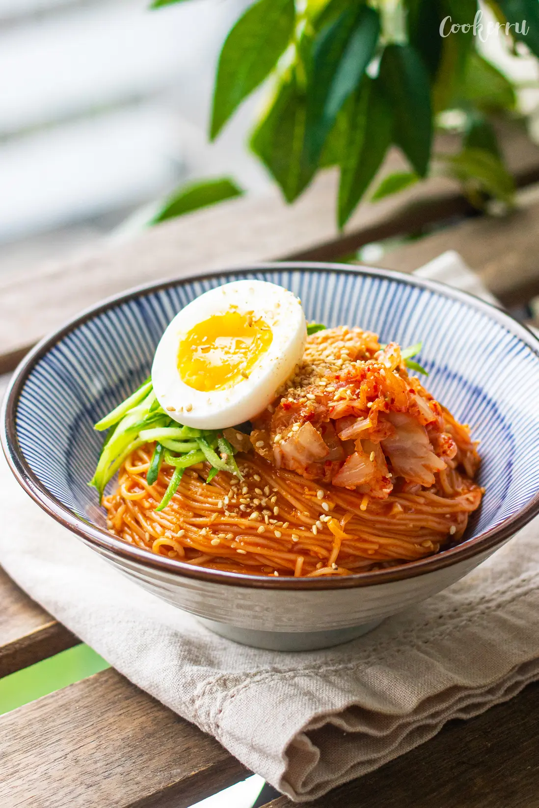

Bibim Guksu

Description
This quick & easy Bibim Guksu recipe features cold noodles coated in a sweet, spicy, and tangy gochujang sauce and topped with kimchi and fresh vegetables to finish.
These Korean spicy cold noodles are incredibly simple to prepare yet packed with scrumptious flavor in every bite.
Ingredients
- Thin wheat noodles (aka Somyeon or Somen)
- Gochujang (Korean chili paste)
- Soy sauce
- Sesame oil
- Vinegar
- Garlic
- Sugar
- Toasted sesame seeds
Steps
- Combine all sauce ingredients in a bowl and set aside.
- Cook noodles according to package instructions.
Drain and rinse the noodles in ice-cold water, rubbing them with your hands to remove excess starch.
Drain well and place in a bowl.
- Add the sauce over the noodles and mix together until the noodles are evenly coated. Garnish and enjoy!